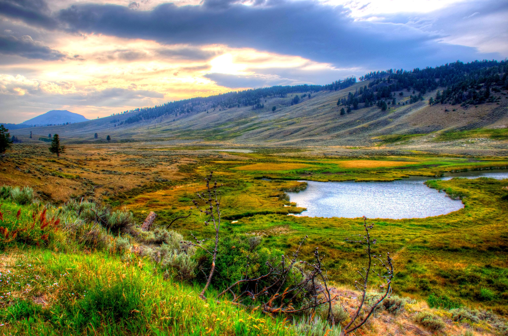

<html lang="en">
    <head>
        <meta charset="utf-8">
        <title>[Yellowstone Gateway]</title>
    </head>
    <body>
    </body>
</html>

<h1>Explore Yellowstone, the World's First National Park!</h1>
<p>Discover a place where nature’s wonders come alive—geysers, wildlife, and
breathtaking landscapes await you at Yellowstone.</p>


<h2>Why Visit Yellowstone?</h2>
<p>Yellowstone is a must-see destination for nature lovers and adventurers alike.
    Marvel at geothermal geysers, hike through stunning valleys, and witness wildlife 
    like bison and wolves in their natural habitat. It’s a place where history and nature
    meet, making it a perfect getaway.</p>

<h3>Fun Activities at Yellowstone</h3>

<ul>
    <li>Hike the Grand Prismatic Spring trail for stunning views of vibrant hot springs</li>
    <li>Watch Old Faithful erupt and explore the nearby geyser basins.</li>
    <li>Go wildlife spotting for bison, elk, and wolves in Lamar Valley.</li>
    
</ul>

<p>Visit this <a href="https://www.nps.gov/yell/index.htm" target="_blank">website</a> for more information.</p>
            

